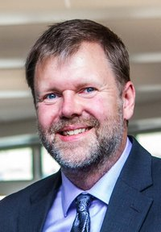

| Dr. Eric Durant
Program Director, Computer Engineering Professor, EECS Department Milwaukee School of Engineering 1025 North Broadway Milwaukee WI 53202-3109 |
durant@msoe.edu
Office: L-339 414-277-7439 (O) |
Courses: EE-3032 Senior Design | Schedule | Advising | CV | Publications | Recommendations | Other
I am a professor at Milwaukee School of Engineering (MSOE). I teach in and am the director of the computer engineering program. I also have the honor of advising three of MSOE's great student organizations, MSOE FIRST, the Photography Club, and Global Brigades' Public Health Brigade.
During the summers I am a DSP Research Engineer at Starkey Hearing Technologies in Eden Prairie, MN. My research includes using genetic algorithms to efficiently fit audio processing parameters in hearing aids (US patents 7650004 and 9049529), robust perceptual rank inferencing (US patent 8359283), beamforming, convex optimization (US patent 8824711), deep learning, and spatialization (US patents 9124983, 9584933, and 9930456). At Johnson Controls (1996–1998), I worked on Internet technologies, GIS, and building control interfaces.
I earned bachelor's degrees in electrical engineering and computer engineering from MSOE. I earned my master's degree and PhD in electrical engineering from the University of Michigan and the Executive Master in Business Administration (MBA) at the University of Wisconsin–Milwaukee.
I am a senior member of the IEEE (S'93 M'02 SM'06)
and a member of the American Society for Engineering Education (ASEE) (M'02).
I serve as an ABET EAC program evaluator for both computer and electrical engineering programs.
I was recognized by STEM Forward as the Young Engineer of the Year in 2013
and by MSOE and our students as the Oscar Werwath Distinguished Teacher in 2016.
| Dr. Eric Durant
Program Director, Computer Engineering Professor, EECS Department Milwaukee School of Engineering 1025 North Broadway Milwaukee WI 53202-3109 |
durant@msoe.edu
Office: L-339 414-277-7439 (O) |